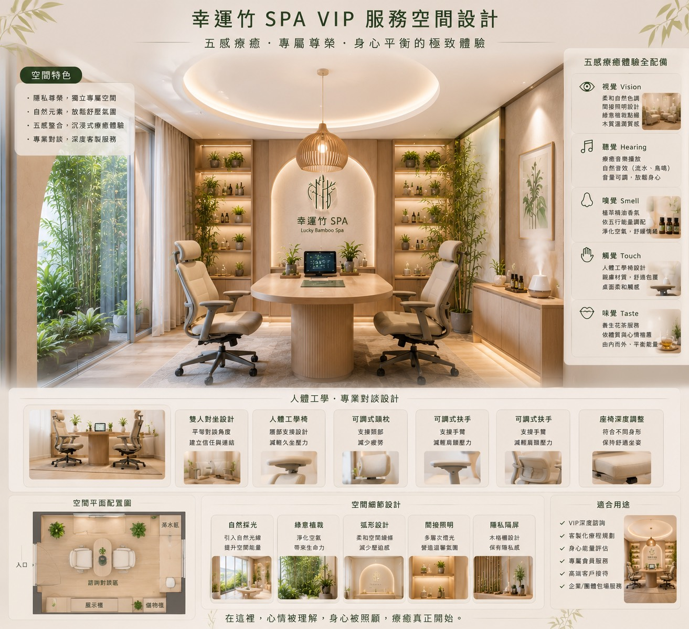

竹林、自然採光、暖光與低飽和木質，讓空間看起來乾淨但不冷。

五感的重點，是讓人從外在環境慢慢回到內在節奏。
來到這裡的人，不一定一開始就能說清楚自己需要什麼。空間先提供安定感，諮詢再把身體與情緒的需要慢慢說清楚。
自然音與柔和音樂降低干擾，讓使用者能把注意力收回自己身上。
五行精油依當下感受調配，讓香氣成為情緒與療程之間的橋樑。
人體工學椅、柔軟織品與溫潤木質，讓身體有明確支撐。
花茶與溫熱飲品在療程前後提供節奏感，讓體驗停在回甘與平衡。
入店不是流程表，而是一段情緒轉換。
迎賓、入座、茶水、諮詢、準備與送客，不只是服務順序。它們讓人從外面的速度，慢慢回到適合療癒的速度。
-
01
迎賓接待
以親切問候與清楚導覽，先建立第一層安全感。
-
02
茶水安定
用有機養生茶與短暫停留，讓身體慢下來。
-
03
身體諮詢
確認膚況、身體感受、想加強的部位與今天最需要被照顧的地方。
-
04
療程承接
依五行精油、檢測結果與服務部位安排體驗。
空間語彙
自然採光、綠意植栽、木質曲線與隱私屏風，讓使用者在視覺上先感覺被照顧。
服務分寸
詢問、陪伴、確認與建議都要剛好。專業感不在話多，而在每一句都能安放需求。
預約前的安心
在真正抵達之前，先知道自己會如何被迎接、如何被詢問，也會如何被好好送回生活。